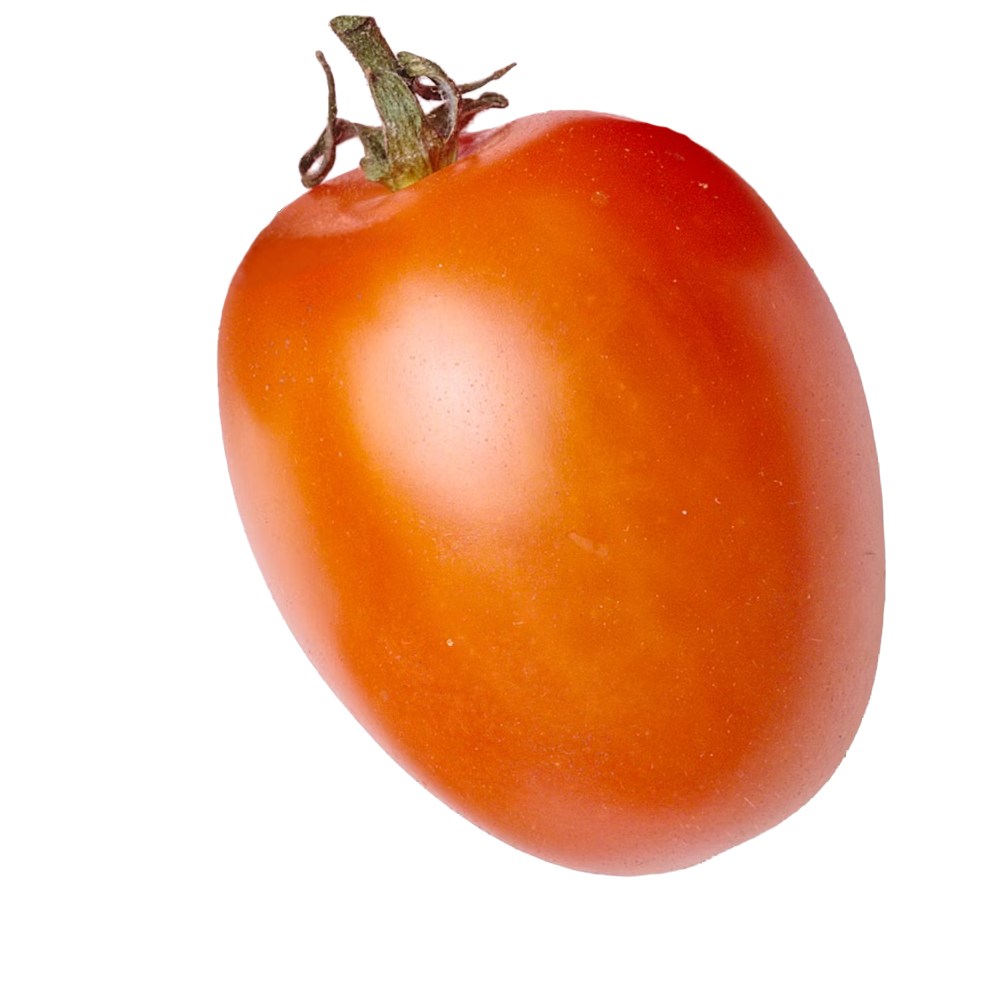
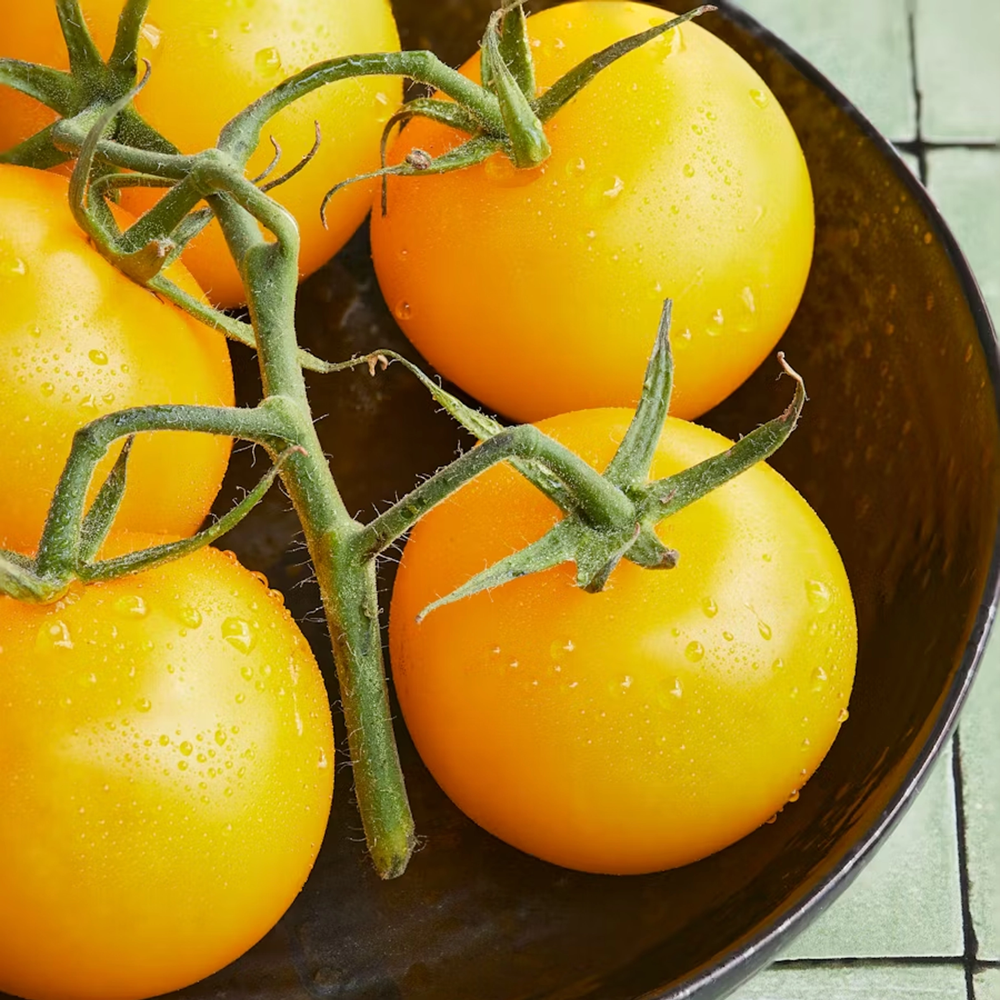
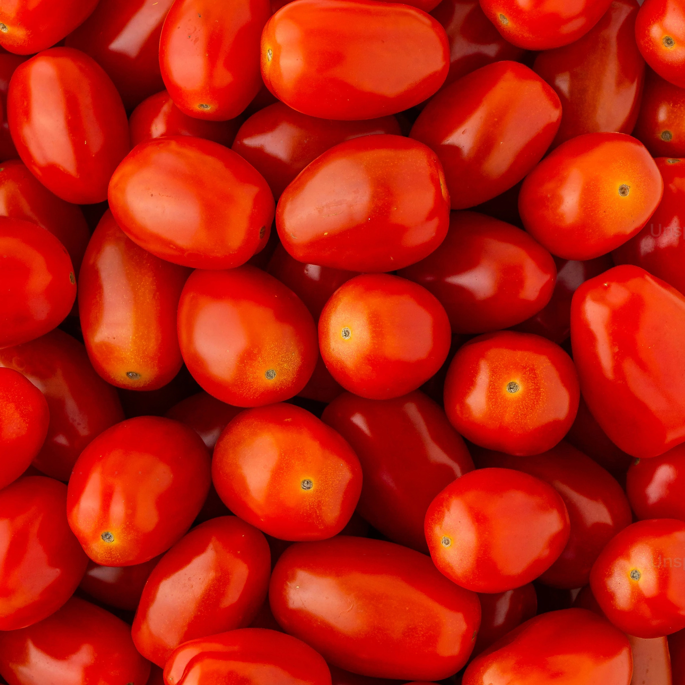
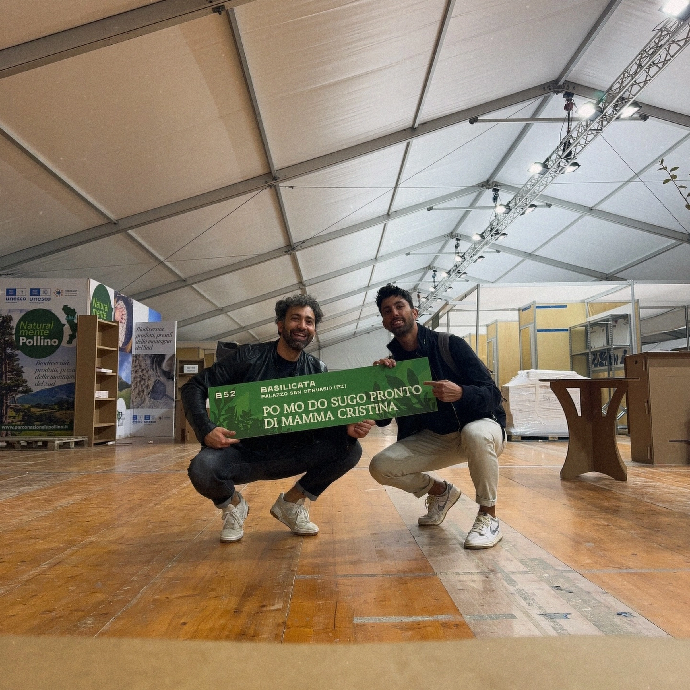

L'ESSENZA DEL
POMODORO,
NUDA E CRUDA.
Dal campo al 'boccaccio'.
Solo datterini freschi, lavorati come un
rituale di bellezza.
UNA TERRA OSTINATA,
UN RISPETTO ANTICO.
La nostra sostenibilità ha le mani di Papà Rocco, l’agricoltore della famiglia. Coltiviamo pomodori biologici certificati rispettando i principi dei nostri nonni e la conservazione del territorio lucano.
Proteggiamo l'equilibrio naturale del Vulture attraverso una coltura fondata su principi sani.
Ogni fase avviene a Palazzo San Gervasio, riducendo al minimo l'impatto ambientale e gli intermediari.

Datterini Gialli – Dolcezza infinita

San Marzano – Polpa generosa
DAL CAMPO AL "BOCCACCIO"
IN MENO DI 24 ORE.
Il segreto di PO MO DO è il tempo. Quello che risparmi tu in cucina, lo mettiamo noi nella lavorazione.
Lavorazione in Giornata
Raccogliamo solo pomodori a perfetta maturazione e li trasformiamo immediatamente per preservarne il profumo originale.
Pazienza Artigianale
Mamma Cristina cura la cottura lenta, unendo il pomodoro alla cipolla rossa e all'olio EVO di alta qualità, senza aggiungere coloranti o conservanti.
Piccoli Lotti
Produciamo in quantità limitate per garantire che ogni vasetto riceva la premura che solo una madre ha per i suoi figli.

IL SEGRETO È
LA FAMIGLIA.
Non siamo un'industria. Siamo Papà Rocco e Mamma Cristina, un contadino e una cuoca con la passione per il nostro territorio.
Tutto è iniziato nella nostra cucina a Palazzo San Gervasio, Basilicata. Abbiamo deciso di imbottigliare la nostra tradizione, usando esclusivamente i datterini che coltivano nei nostri campi, per farti ritrovare il sapore della domenica italiana ogni giorno.
TUTTA LA BASILICATA IN UN CLICK.
I Boccacci
Le Promozioni
Pack di Benvenuto
2x 200g Datterino Giallo + 1x 300g Sugo Rosso. L'introduzione perfetta all'essenza del pomodoro.
€ 25,00
Ordina su WhatsAppLa Dispensa
Cartone da 32 barattoli
Ideale per chi non vuole mai restare senza il sapore del Sud. Scegli il tuo assortimento.
€ 175,00
Ordina su WhatsApp